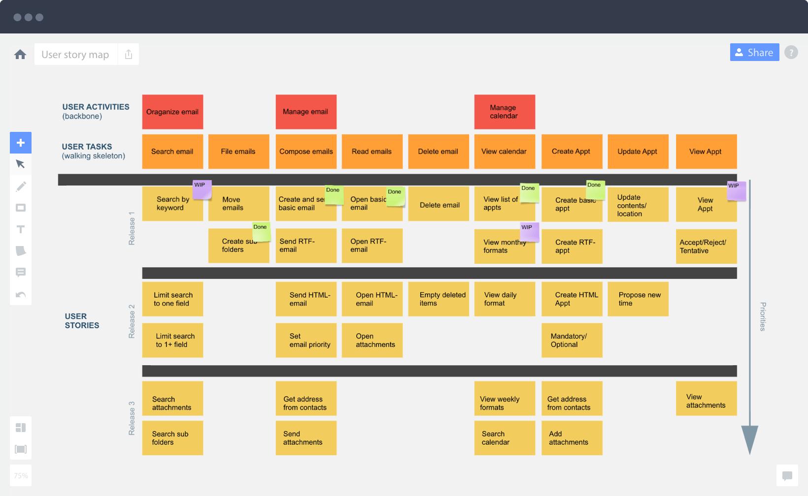
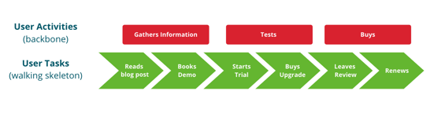
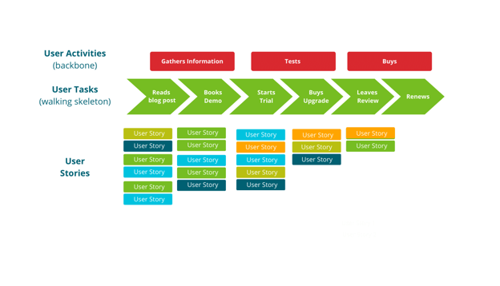
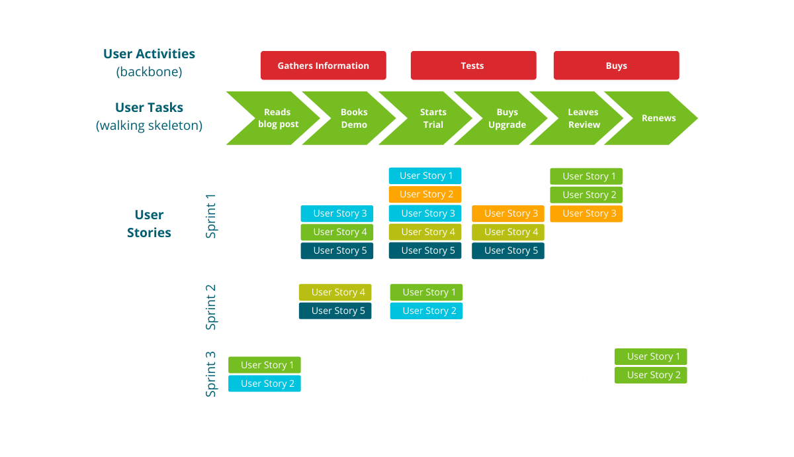

User Story Mapping for Better Backlog Management
Original article at: https://www.agilesherpas.com/blog/user-story-mapping
The user story format is great for evaluating any work we plan to process from the customer's perspective. We can't actually step inside a customer's head, but the user story is often the next best thing.
User stories as a placeholder for continuous conversations with customers first emerged in the software development context, but it’s no surprise that this Agile planning tool has found wide adoption among marketers.
As we create collateral and campaigns, documenting them via stories helps us stay focused on providing value.
User stories are the key to a backlog of marketing work that not only indicates priority, but also successfully creates shared understanding among the team members about the "so what?" of the work that’s coming down the pipeline.
However, once we start breaking down user stories into smaller, more bite-sized tasks for the team to process, it can become very easy to lose track of the original big picture.
A simple solution is applying the process of user story mapping, which links user stories back to the central customer journey. Mapping user stories is a widely-adopted practice in product development, but, unlike user stories, it's not as widely used in marketing.
If you're among the marketers exploring Agile project management and struggling to align long-term strategy to daily activities, user story mapping may just be missing piece.
What is User Story Mapping
User story mapping is a visual practice that helps marketing managers and teams hone in on the work can quickly deliver value to the organization as a whole, while also delighting customers and prospects. The practice was first introduced in 2005 for product development by Jeff Patton in his fantastic book, User Story Mapping.
Mapping user stories improves the team’s understanding of the organizational priorities and makes it easier to plan work effectively across sprints (in a Scrum team) and across time (in a Kanban team).
This practice enables us to create a dynamic outline of the upcoming marketing efforts and the user’s interactions with each of them through time. Based on our map, we can break down our marketing user stories into actionable work items and plan to execute them when they're likely to make the greatest impact.
A user story map consists of two dimensions: vertical and horizontal.
The vertical dimension indicates priority. It works similarly to the way we prioritize user stories in a traditional backlog. We place the items with the highest priority on top and arrange them down the line accordingly.
The horizontal dimension represents the steps a user takes toward becoming a paying customer based on pivotal moments in their journey, all of which are facilitated by marketing campaigns. A good example of a horizontal dimension of a user story map would be the following path:
Become aware of the problem our product/service solves --> Learn about the available solutions --> Compare solutions --> Make a purchase
User story mapping can be used as an alternative to traditional backlogs, or as an additional visual tool that boosts their value. By visually mapping our user stories, both horizontally and vertically, we can break the customer journey down into its distinct stages and group activities in a way that will support the timely delivery of value on an internal level.
As a result, we can ensure that nothing gets missed when we plan large campaigns that span across a longer timeline.
Before proceeding to learn how to apply user story mapping, why don't you take a second to get the most recent State of Agile marketing report?
Applying User Story Mapping
Like backlog management, user story mapping is an ongoing process. The best time to start with this practice is during the planning phase of a marketing campaign.
To build the user story map on the campaign level, we can either use an existing backlog of user stories or start from scratch.
To visualize a user story map in a clear and accessible way, we use old-school whiteboards and sticky notes, or, if we're working remotely, use a digital tool like Miro for the same purpose. 
The process of creating a user story map can be broken down into seven distinct steps that we recommend you take collectively with your team during a communal planning session.
Step 1: Frame the use case
Begin by establishing a common goal to serve as the foundation for the user story map. The end goal could represent the desired outcome from a specific marketing campaign, or a larger vision for building a buyer journey for a new product or service from inception to purchase.
There's no universal frame to use when mapping our user stories, so the map can vary based on the context. To build a frame that described your context best, consider customer-centric questions like:
What problem are we addressing? What are we going to promote with our marketing efforts? Who is the buyer persona we are targeting? What are the benefits of our product/service for the buyer’s persona? When addressing these questions, it's important to achieve a shared understanding about the horizontal dimension of our user story map as a path of activities our target audience will undertake.
With this information at our fingertips, we can proceed to build the map itself and populate it with user stories.
Step 2: Identify the steps your user takes
Once we know the final destination, we need to define the groups of tasks the user must go through to reach the desired outcome. This will inform the user stories that the execution team must develop to support the user activities described in the horizontal dimension. 
Traditionally, product development teams use the horizontal axis of the map to visualize the user functionalities that they’ve agreed to develop. Marketing teams use the horizontal axis to identify the desired outcomes from a single marketing campaign that the user will interact with, or the stages of the buyer journey for a product or service they are supporting.
Step 3: Identify the supporting user stories
With the horizontal axis of the user story map in place, we can proceed to group all of our user stories under each horizontal category. If we already have an existing backlog, we can transfer all of the related user stories under the stage of the buyer journey that they are geared toward supporting.
This exercise reveals how our current backlog of user stories is distributed across the stages of the buyer journey we have already identified. 
If starting from scratch, we need to define and group all marketing activities that will allow us to achieve the goals we set in step 1 together.
Step 4: Break down large user stories
If the user stories contain projects or campaigns that are not granular enough to be actionable, break down the largest user stories on the map into smaller chunks of work that the team can process in a few hours or days.
This is a great opportunity to define the actionable tasks that comprise each user story and list them as separate entities on the map under each category.
Step 5: Inspect the map
At this point, our user story map should be quite well populated. Its visual nature makes it really easy to see where the gaps in our backlog might have been. Are we adequately supporting each stage of the buyer journey?
The high or low volume of user stories under each stage of the buyer journey will indicate whether we need to add more user stories to support each stage.
Execute a thorough inspection within your team and involve stakeholders to get feedback on the current state of the user story map. Involving stakeholders outside of the team in the user story mapping process has the potential to reduce the chance of future interruptions caused by gaps of marketing support for any of the stages of the journey.
Step 6: Prioritize the user stories
User story mapping would not be as beneficial a practice if we did not take the time to prioritize the work items on the map. A user story’s priority is reflected by its position on the vertical axis of the map. The higher a user story’s position is on the map, the greater its business value.
To maximize the impact of your user story visualization, use color codes to indicate the relationship between user stories based on the campaigns they might be contributing to.
Step 7 (optional): Define iterations
If operating within a Scrum team structure, consider batching your prioritized user stories to reflect how they will be delivered across the sprint schedule. 
Many product teams like to break down the vertical axis into Sprints or custom iterations (e.g. weeks or months).
Whether this is necessary depends on the scope of the user story map and whether the view it presents is far-reaching into the future or closer to present day.
Benefits of User Story Mapping
User story mapping can be a highly beneficial practice for an Agile marketing team because it provides the ability to improve the timely delivery of value to both the business we support and the customers we serve. In addition to helping us see the bigger picture, it brings several other notable benefits.
Improved focus on customer value
Traditionally, when a product team applies user story mapping, they're envisioning their work through the eyes of the actual users of the product. For marketers, value is defined based on the desired outcomes of a specific marketing campaign and its customization for a target audience.
The user story map we create helps us identify how the audience experiences the buyer’s journey, and which internal efforts are likely to bring the best outcomes. As a result, teams can focus on delivering more value by putting ourselves in the shoes of a potential customer.
Improved prioritization
By adding user story mapping to our Agile marketing arsenal, we can significantly improve the effectiveness of prioritization at a larger scale than our backlogs of upcoming work. A user story map creates a holistic visualization of all the work we need to complete in order to deliver a fantastic buyer’s experience through time.
User story mapping allows us to batch our marketing work for even greater customer satisfaction and focus on what matters most at any given moment of their journeys.
Improved timely delivery of value
This method of planning can also improve the timing of our efforts and ensure that we are delivering value when it matters most on the team level and across sprints.
If working in Sprints, we can group user stories into our designated timebox for the foreseeable future and update the map accordingly based on changing priorities.
In a Kanban context, visualizing a timeline on the vertical axis of our map to indicate the most opportune time frames to deliver our outputs can serve a similar function.
Improved risk management
By creating a user story map that visualizes how buyers interact with our brand and product/service, marketers can see how their tasks relate to larger initiatives and have a better understanding of how their daily work affects the over-arching user goals. This helps us identify dependencies, potential problems, and risks.
With a view that covers a wider time frame into the future, we can mitigate potential risks like delays earlier in the process to deliver value successfully at the time we had originally planned.
Improved collaboration
Although user story mapping can be the responsibility of the marketing owner, it brings the best results when the responsibility of maintaining the map is shared among the members of the team and the MO equally.
Building and maintaining a user story map helps the team to gain a shared understanding of the buyer’s experience and the work in the pipeline that exists to improve it.
This access encourages collaboration and helps the team reach consensus on what they need to deliver, when is the best time to do it, and why it matters to the customer.
Improved stakeholder relationships
The last notable benefit of user story mapping for marketers affects our ability to communicate with stakeholders. As we're painfully aware, marketing teams have to work with a wide variety of stakeholders from all areas of the organization. This reality means we often receive multiple requests for immediate action all labeled as high priority.
With a user story map in place, we can evaluate the importance of such requests and communicate with stakeholders the other value-adding initiatives that we are currently working to deliver. This creates an opportunity to prioritize new work against ongoing work with approval from our stakeholders, who also have access to the user story map.
As a result, we can set realistic expectations with stakeholders and avoid distractions during the work process.
Eager to Create Your First Marketing User Story Map?
User story mapping is a natural continuation of the popular practice of articulating user stories for marketing work. Its value is undeniable and can bring plenty of benefits to forward-thinking marketers who seek to improve the efficiency and effectiveness of their planning process.
By mapping our user stories to specific goals and activities, we can achieve a better shared understanding of their value to our organizations and the stages of the buyer journey. This gives us greater insight into what needs to happen and why. It can also help reduce costly issues like unplanned work in the process.
To make the most of user story mapping, follow the seven steps above, then keep a close eye on the map and your team's future customer-centric endeavors.